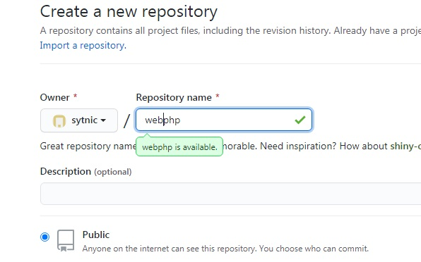
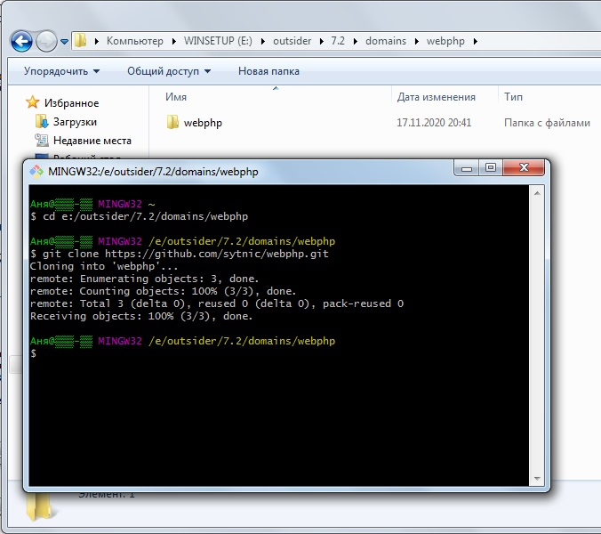
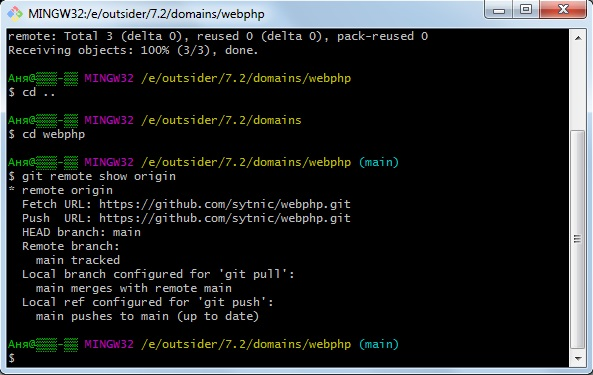
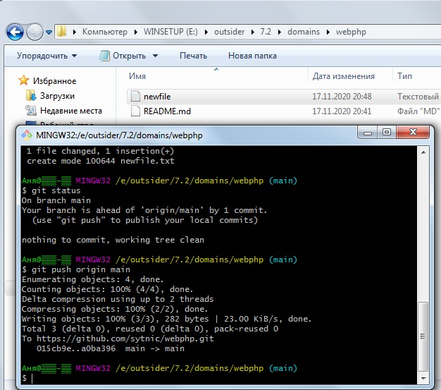
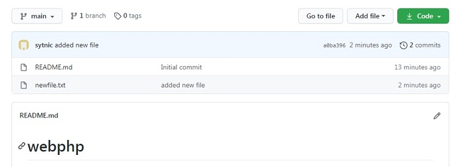
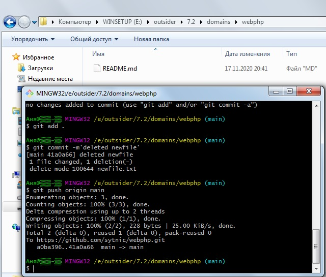
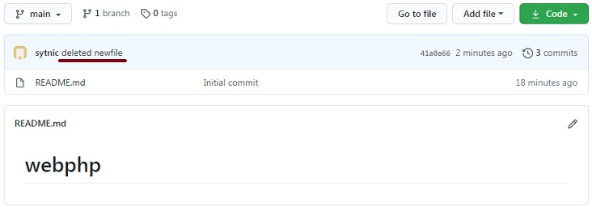

4.1 Скриншоты работы с Git.

Задача
Задача - завести репозиторий и заскриншотить несколько простых шагов.
Задумка
Мои планы в этом файле немного поменялись: выполню всё на тестовом репозитории.
Решение
Итак, решение - по порядку, по заданию, в скриншотах.
Создание репозитория на Github.
Клонирование репозитория к себе на компьютер.
Сразу поясню, что я работаю на самом низком уровне: в терминале Git Bash. Ведь, как известно, различные программы, IDE, редакторы, Github Desktop создают красивую и удобную оболочку для того, что на самом деле происходит под капотом. А под капотом происходит Git Bash )).
Синхронизация рабочей папки с онлайн-репозиторием.
Изменить файл в локальном репозитории, закоммитить и отправить в онлайн.

Удалить файл из репозитория, закоммитить и запушить в онлайн.

Ну, вроде бы и всё.
Размышления
Если честно, я привык сначала создавать репозитории на компьютере. Прямо с помощью Git Bash. А уже потом push. Но в этом есть и недостаток. Если не создать сразу README.md на компьютере и просто добавить его потом в онлайн-репозитории, то что произойдёт при следующем коммит и пуше? Да, именно. Git Bash попросит сначала углубить знания в pull и fetch. А если ты параллельно создал и README.md у себя на компьютере? А если ты особо и не знаешь, что такое pull?